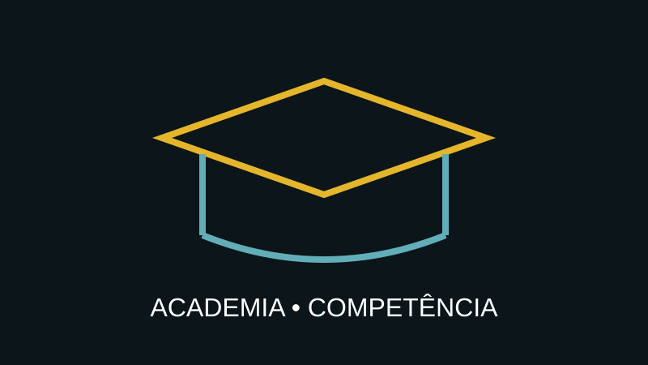

CAPACITAÇÃO • LEAN SIX SIGMA
Academia Corporativa de Excelência
Desenvolva capacidade interna para identificar, analisar e solucionar problemas com método.

Conhecimento que fica
Uma organização madura precisa desenvolver pessoas capazes de resolver problemas sem depender permanentemente de especialistas externos. A Academia combina formação, prática e projetos supervisionados.
Trilhas
As trilhas podem ser desenhadas por nível de maturidade e função, conectando fundamentos Lean, ferramentas da qualidade, estatística, DMAIC e aplicação em problemas reais.
Entregáveis
- assessment de competências;
- matriz de competências;
- trilha de aprendizagem;
- workshops e materiais;
- projetos supervisionados;
- avaliação e certificação conforme o programa contratado.